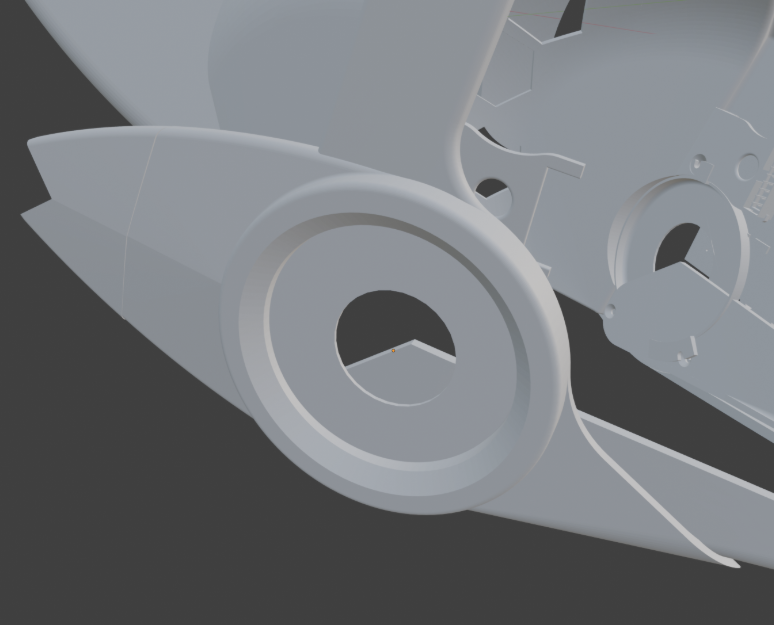
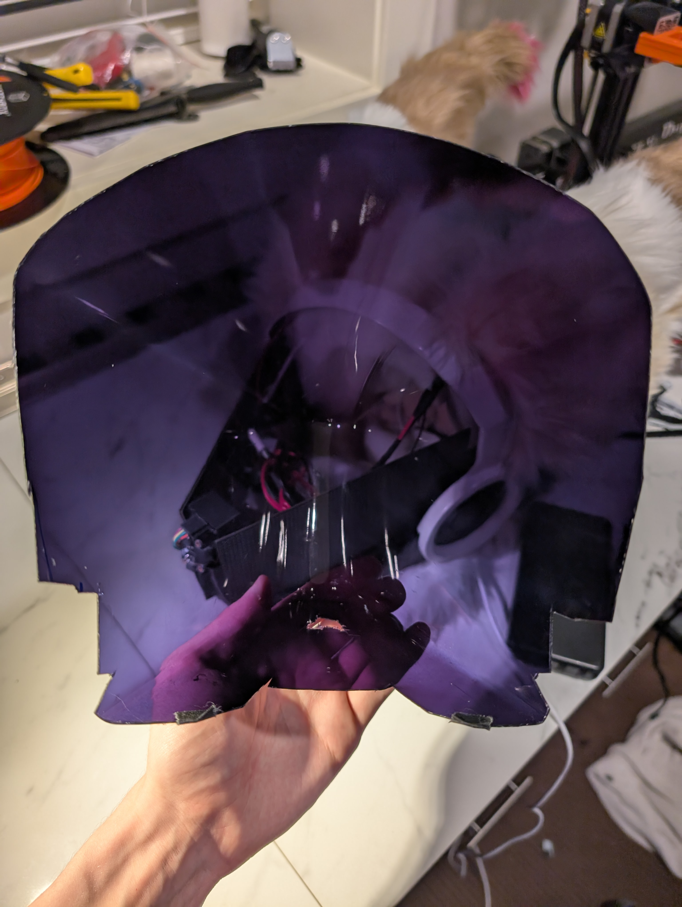
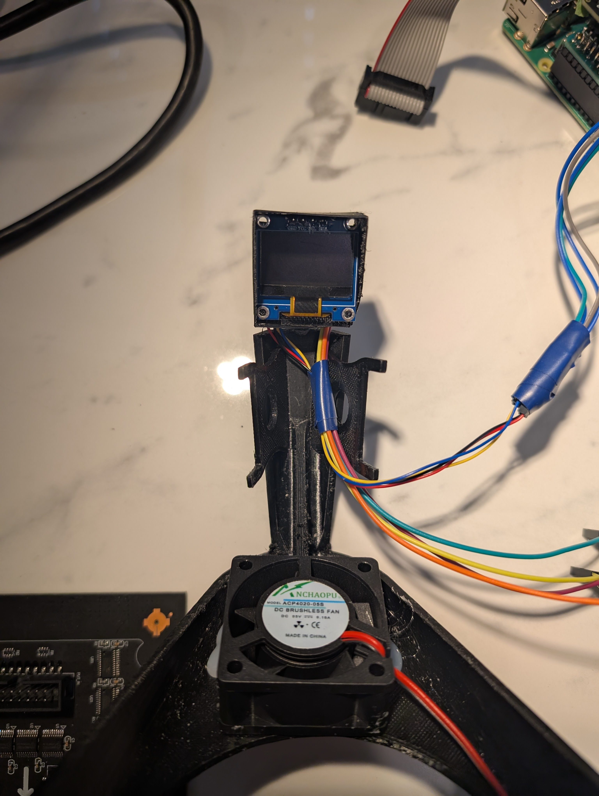
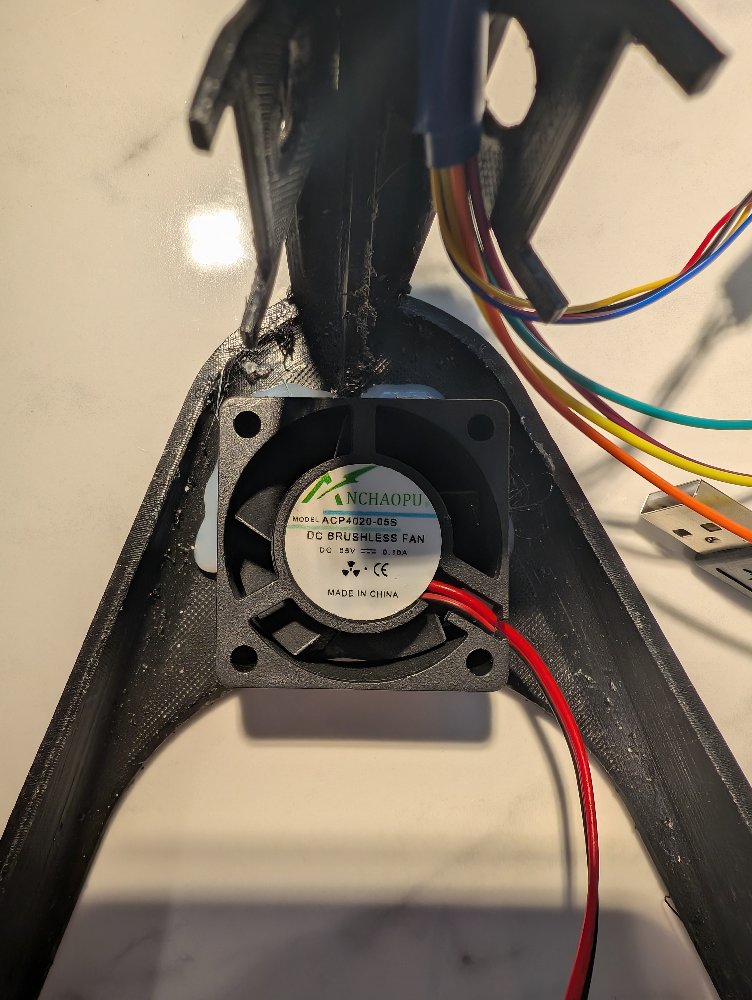
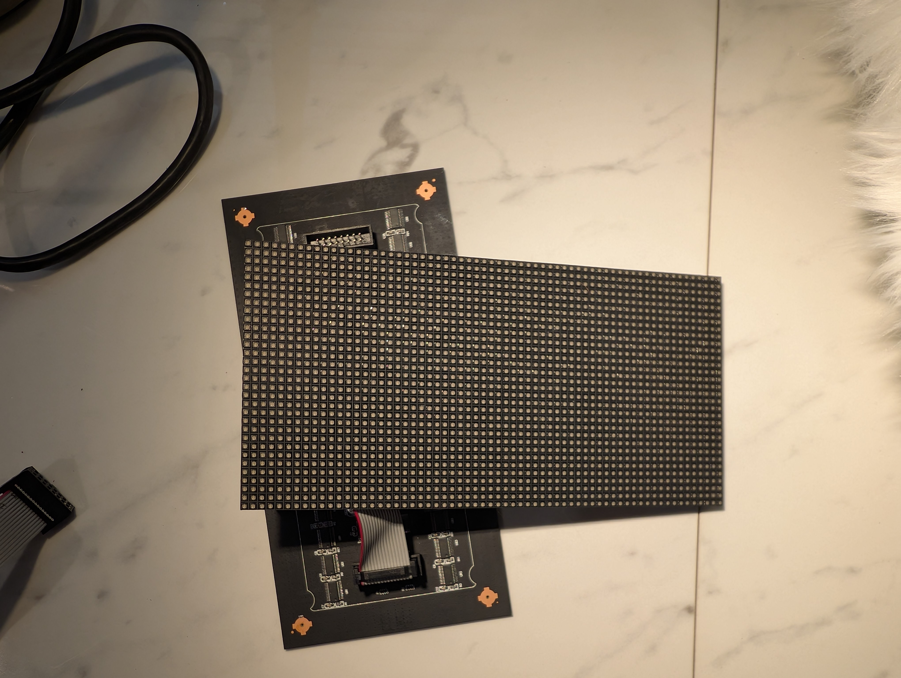
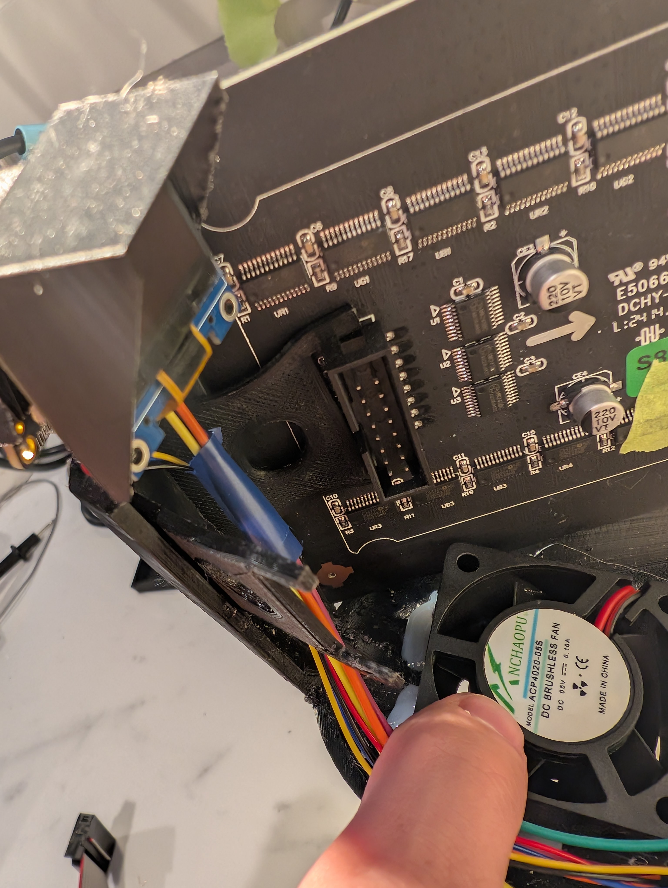

ProtoLynx
This is my ProtoLynx! (A protogen Lynx Hybrid) that I built from scratch! This blog is to help inspire you, give you insight on how mine works, and allow you to see whats possible!
My ProtoLynx Features:
-Runs on a Raspberry PI 3 B+
-2x 32x64 LED Displays
-2 Round Side Displays
-Front Distance/Boop sensor
-Interior HUD
-3 Interior Cooling fans
-Bluetooth App control
-Custom-written software
If you don't know what a Protogen is, they are these furry robot cyborgs with screens as faces, I really like the species.
Now while there are many creators online that you can commission to have a protogen made for you with everything covered, but the nerd in me and always wanting to do a project me, along with wanting to make a fursuit head but being intimidated by the idea of an entirely fur one, decided to attempt to do it myself and make my own Protogen, which I think turned out really great! I also wanted a more original design so I settled on a ProtoLynx (a protogen and Lynx hybrid)
The base of the frame is
Protogen M16 mk3 V1.2.2 by M16_Studios
I did end up modifying sections of the frame to fit the features I wanted
Custom side pieces for the screen

Custom hud and distance sensor attachment

Back of head piece with holes to reduce weight and provide passive cooling, it can get a little hot inside of it!
AAll the parts were printed on an Ender 3 v2 using Elegoo Rapid PETG. The default bed size inside most slicing software limits the printing to a little smaller than the bed, but by editing the settings, you can manage to print out every piece within the bounds of the 235 mm x 235 mm print bed.
The supplier for the visor was Pyro Creations He was extremely helpful during the development of my protogen throughout with much more then just the visor so a huge thanks to him
The visor is formed by heating transparent PETG and vacuum forming it over a mold. The cooled piece of plastic is then dyed to give it a nontransparent from the outside look.
Images provided by Pyro
Many people ask me about how the visibility is through the visor, the visibility is honestly really good, its a lot like looking through sunglasses with the tinting the visor gives, since the head sits on at an angle, the wearer looks through the top of the visor which usually gives more degrees of visibility compared to traditional fursuit heads.
The visor is cut to fit onto the head

Painting of the frame comes in a few steps, since 3D prints have layer lines, a large amount of standing is required to smooth it out
After a large amount of sanding is done a good next option is automotive body filler (what I used) or wood filler (others have said it's good for 3D prints). I dont have photos of the filling, primer and painting process but there are many guides on how to paint 3D prints for reference I used Rust-Oleum Automotive Filler Primer Spray Paint, Montana Gold colored spray paints, and Montana Tech Varnish - Semi-Gloss to give my entire head a black and white color scheme along with a semi glossy finish.
For assembling, only two areas needed to be glued together
The top of the frame
And the back of the frame at the top
The rest of the frame is held together in sections with M3 embedded brass nuts with a length of 6mm and an outer diameter of 4mm and 12mm M3 countersunk head screws.
Compaired to regular fursuit heads only a small section of it needed to be foamed, the area where the back of your head sits on and where most of the weight of the head lies
Foaming of the ears was also required, in this case using eva foam along with the regular upholstery foam


This is what the head looks like, fully painted and furred, not much of the surface area of the 3d print is visible. but its there to provide a good frame for the rest of the electronics.
Furing of the head is very similar to furing of any fursuit head, so I won't go into much detail about how I did it and there are many great resources online that would explain it much better then I could, it simply consists of the standard patterning out the fur and then gluing it to the head
Speaking of electronics, you may have noticed that there are these 2 wires inside the head currently, those two are the main power wires, the white one being to power the raspberry pi (which I’ll explain more soon) and the red and black ones are one wire that splits into two in order to power both of the displays for the face! The overall power draw for the head is actually quite low, with this 20000mAh Power Bank I got from amazon (Which I made sure had 22 watts of output power for the Raspberry pi) lasts about 5 hours with continuous use, and also doubles as a power bank for your phone when its not being used!

SIDE SCREENS:
The side screens are two 240x240 SPI 1.28 inch TFT Screen Display Modules which I got from Aliexpress
They are both just hot-glued into the side display mounts, they are connected with the included ribbon cable or since I found the included ribbon cable too short for my application, you can make custom cables for more length.
The side mounts just pop into the head and are held in place with friction

HUD AND FRONT BRACKET:
The front bracket is what holds the main screens in position along with a few other features
From the inside you can see that there is a small HUD module which I use to display information about the current state of the protogen head along with cpu temperature, and phone connection status.
The front bracket also features a distance sensor from Adafruit


And finally there is a little 5 volt fan used to push air out of the bottom to help cool the entire head

RASPBERRY PI:
The main brain behind the entire head is a Raspberry PI 3 B+ A cheap little computer that supports bluetooth, a bunch of output pins and allows code to be run on the protogen, many other protogen heads use a much simpler computer such as an Arduino, and I highly recommend you use one if you dont need the features I did for my head, but for the features I wanted on my protogen I needed the abilities of the PI.
I also designed and had JCLPCB manufacture small header boards that connect on top of the Raspberry PI’s GPIO pins, You can find the PCB files HERE, this allowed my wire management to be much simpler, Easily having output pins to connect the side displays, HUD, and distance sensor, as well as connected the Adafruit driver board for the two main displays.
DISPLAYS:
The main two displays on which you see the face are 64x32 RGB LED Matrix - 3mm pitch which seem to be the most common option of display when it comes to other protogen heads
the two displays are driven by the Adafruit RGB Matrix Bonnet for Raspberry PI which allows the displays to be driven from the pi, while powered from the power bank

The displays are mounted inside the head using two friction fitting clips, one at the front and one at the back

These clips allow the display to have a little bit of wiggle room horizontally, so it can be lined up just right for the rest of the components.

WIRING EVERYTHING UP:
There are quiet a few wires inside the head but the wiring is quiet simple, to start, not easily visible in most of the photos, there are two fans towards the ears and provide an inflow of air into the head
They are simply plugged in via usb along with the outflow fan on the front of the frame
On the left, the pins connect the left and right ear displays, HUD, and the Distance sensor.
The big 2x8 connector on the Adafruit bonnet is for the left screen, each of the screens have a connector to easily jump from one to the next. Each of the screens needs their own power connector, which simply plugs into the screen
And thats all of the wiring that is needed!
Once all the wires are connected, everything is just secured inside of the head
And then the visor is attached via friction!
SOFTWARE:
I wrote my own custom software for the Raspberry Pi to run to allow communication to my phone via Bluetooth, along with a custom Android app!